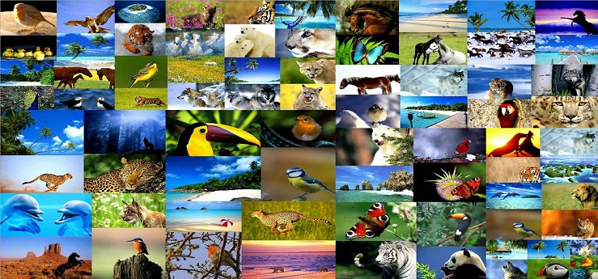

Las faunas más peligrosa
La naturaleza, a veces bella, otras letal. En la mayoría de las ocasiones, cuando hablamos de animales peligrosos, se nos vienen a la mente el león, el tiburón blanco o el tigre, aunque estas especies no son necesariamente las que más vidas se cobran al año. No siempre los patrones animales se rigen por una misma norma y, muchas veces, el ejemplar más llamativo puede ser, al mismo tiempo, el más letal. A continuación les ofrecemos algunos de los animales más peligrosos del planeta.